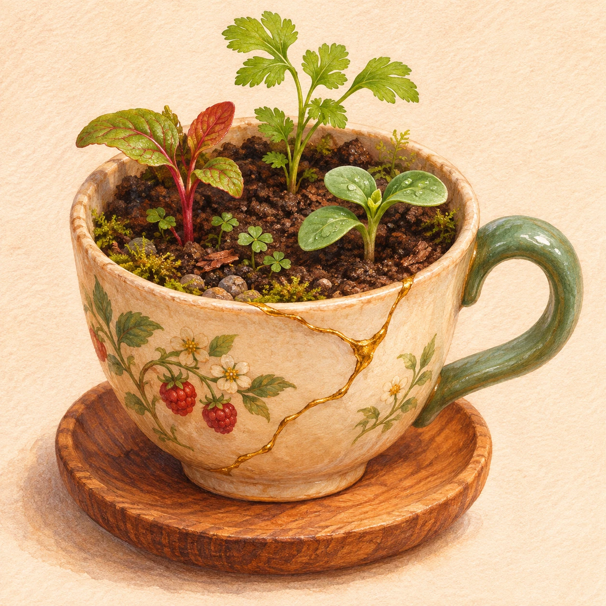

Вечер 1
Приглашение в обзорный вагон
Каждый выбирает дорожную вещь и связывает героя с одним товарищем.
Открыть отдельную карточкуОткрывайте отдельную карточку и показывайте её игрокам в нужный момент. Полный каталог заранее раскрывает события. Каждую карточку можно распечатать из браузера.
Каждый выбирает дорожную вещь и связывает героя с одним товарищем.
Открыть отдельную карточкуОтделите наблюдение «груза нет» от предположения «его кто-то украл».
Открыть отдельную карточкуНазовите, что запись подтверждает и чего сама по себе не доказывает.
Открыть отдельную карточкуМожно нарисовать следы и сравнить их, не считая чисел и не бросая кубики.
Открыть отдельную карточкуПридумайте вместе один понятный жест «да» и один «не сейчас».
Открыть отдельную карточкуОтделите уже признанный поступок от новой гипотезы. Что вы хотите проверить самостоятельно?
Открыть отдельную карточкуЧто можно исправить в расходе, не уменьшая помощь жителям?
Открыть отдельную карточкуСравните конкретную просьбу с тем, что позднее от её имени объявили.
Открыть отдельную карточкуРаспределите три дела между желающими; подарок не заменяет заботу.
Открыть отдельную карточкуВыберите свою роль. Выступление голосом не обязательно.
Открыть отдельную карточкуКакую часть гипотезы можно проверить пустой моделью? Какое наблюдение ещё потребуется в настоящем месте?
Открыть отдельную карточкуПокажите на модели, какие детали нужно изменить для свободного выхода.
Открыть отдельную карточкуВыберите первые два адреса помощи и спросите, чего требует выбранный путь.
Открыть отдельную карточкуОпишите исправление так, чтобы оно возвращало воду, а не просто назначало виноватого.
Открыть отдельную карточкуКаждый может назвать вещь, которую герой теперь готов сделать иначе, либо просто послушать.
Открыть отдельную карточкуПроверьте результат на месте и оставьте следующей смене понятный порядок. Снабжение не ждёт финального совета.
Открыть отдельную карточкуКто занимается стопором, кто рычагом, кто связью и безопасным выходом?
Открыть отдельную карточкуПройдите выбранный маршрут, нарисуйте неожиданный поворот Тоша и отметьте место, куда он может вернуться.
Открыть отдельную карточкуКаждый заканчивает хотя бы одну строку словами, рисунком или жестом. Ведущий отвечает письмом от выбранного NPC.
Открыть отдельную карточку


